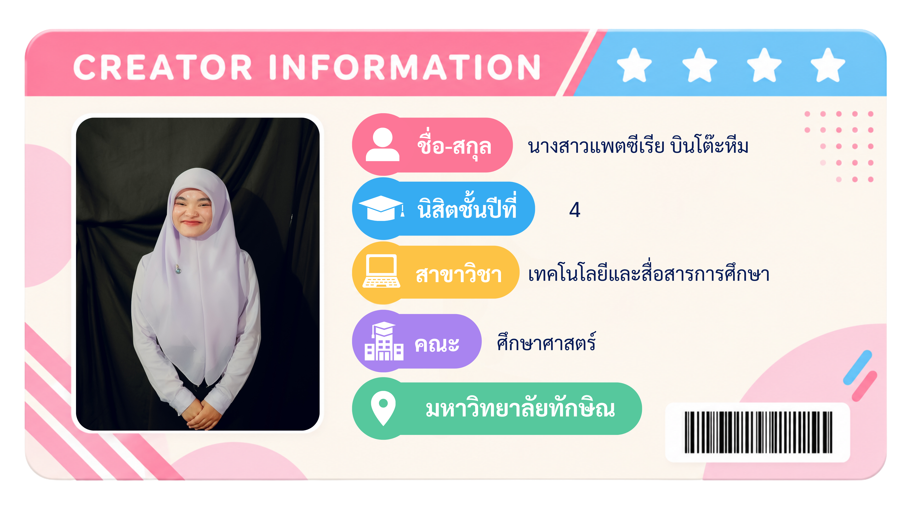

ข้อมูลผู้จัดทำ
เว็บไซต์บทเรียน เรื่อง ความปลอดภัยในการใช้งานเทคโนโลยีสารสนเทศ

เว็บไซต์บทเรียน เรื่อง ความปลอดภัยในการใช้งานเทคโนโลยีสารสนเทศ

แหล่งข้อมูลและสื่อที่ใช้ประกอบการจัดทำบทเรียน เรื่อง ความปลอดภัยในการใช้งานเทคโนโลยีสารสนเทศ
วิดีโอจาก YouTube ใช้ประกอบการเรียนรู้ เกี่ยวกับความปลอดภัยและการใช้งานอินเทอร์เน็ต
เปิดแหล่งข้อมูล ↗วิดีโอจาก YouTube ใช้ประกอบเนื้อหา เรื่องความปลอดภัยในการใช้งานเทคโนโลยีสารสนเทศ
เปิดแหล่งข้อมูล ↗เอกสารออนไลน์จาก PUBHTML5 ใช้เป็นแหล่งข้อมูลประกอบเนื้อหาภายในบทเรียน
เปิดแหล่งข้อมูล ↗